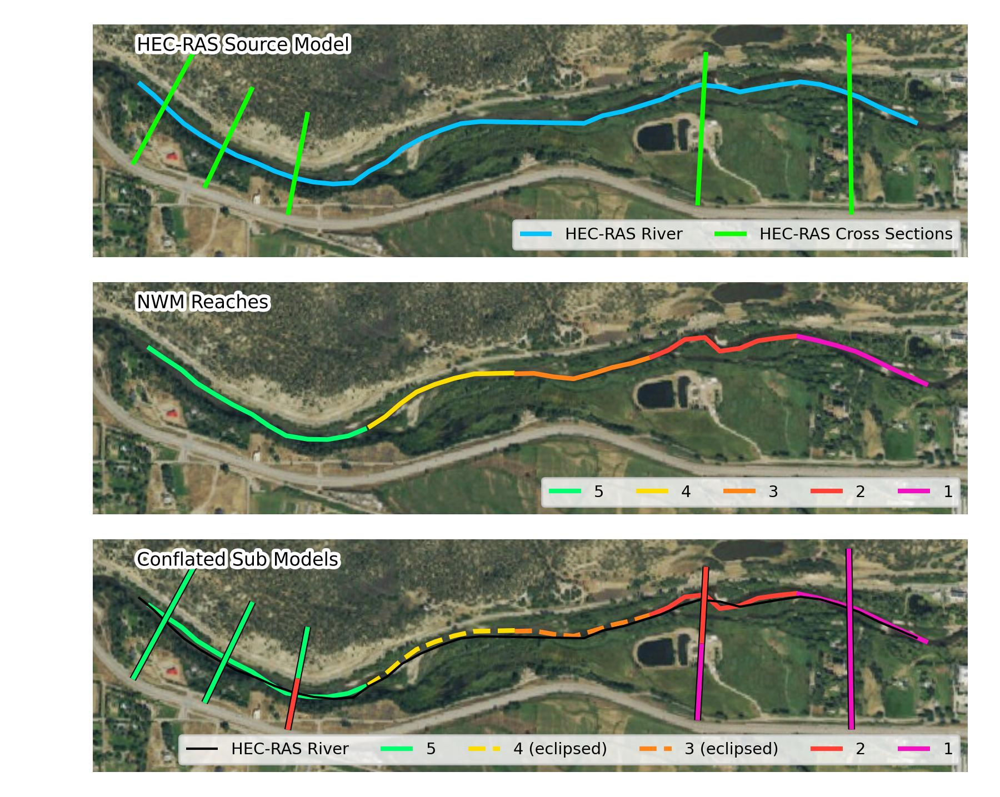
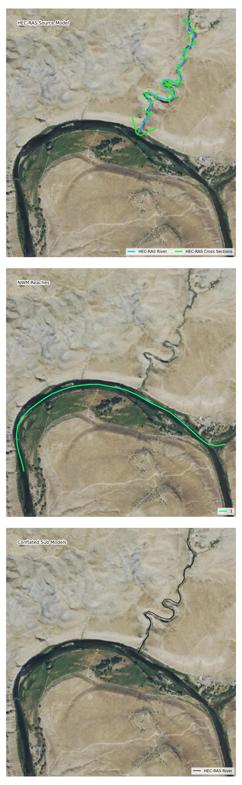
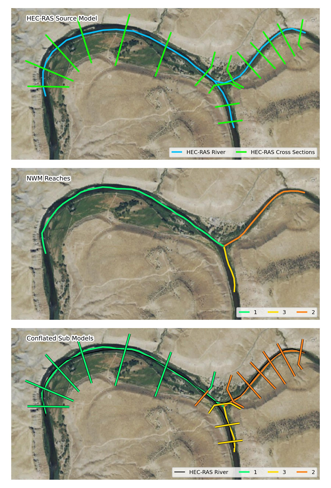
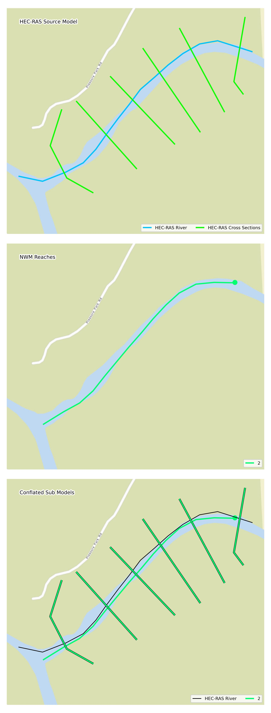
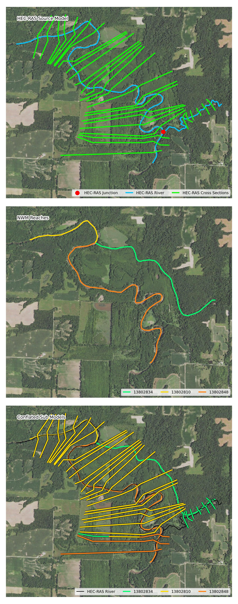

conflate_model¶
URL: /processes/conflate_model/execution
Method: POST
Description:
ripple1d.ops.ras_conflate.conflate_model ¶
conflate_model(source_model_directory: str, model_name: str, source_network: dict, compute_metrics: bool = True, min_flow_multiplier: float = 0.9, max_flow_multiplier: float = 1.2)
Conflate a HEC-RAS model with NWM reaches.
Parameters:
| Name | Type | Description | Default |
|---|---|---|---|
source_model_directory
|
str
|
The path to the directory containing HEC-RAS project, plan, geometry, and flow files. |
required |
model_name
|
str
|
The name of the HEC-RAS model. |
required |
source_network
|
dict
|
Information on the network to conflate
|
required |
compute_metrics
|
bool
|
Boolean indicating if conflation metrics should be computed. |
True
|
min_flow_multiplier
|
float
|
Number that will be multiplied by the NWM "high flow threshold" to define the low_flow value in the conflation json. |
0.9
|
max_flow_multiplier
|
float
|
Number that will be multiplied by the NWM 100-year flow to define the high_flow value in the conflation json. |
1.2
|
Returns:
| Type | Description |
|---|---|
str
|
Path to the .conflation.json file generated |
Raises:
| Type | Description |
|---|---|
KeyError
|
Raises when source_network dict does not contain a file_name value |
ValueError
|
Raises when source_network type is not nwm_hydrofabric |
Notes
The spatial extents of HEC-RAS river reaches and National Water model (NWM) reaches are not aligned. The conflate_model endpoint resolves these differences by associating HEC-RAS models and model components (e.g. cross-sections) with the NWM reaches they overlap.
- Generate a concave hull (bounding geometry) around the HEC-RAS source model cross-sections
- Extract NWM reaches intersecting the hull
- For each HEC-RAS river reach within the source model,
- Locate the NWM reaches nearest to the most upstream and most downstream cross-sections
- Extract all intermediate NWM reaches by walking the network from upstream to downstream
- For each NWM reach extracted,
- Locate the HEC-RAS cross-sections that intersect the reach
- Discard cross-sections that are not drawn right to left looking downstream
- If no cross-sections intersect the reach, mark the reach as “eclipsed”
- Mark the HEC-RAS cross-section closest to the upstream end of the reach as the “us_xs”
- Identify the HEC-RAS cross-section that is closest to the downstream
end of the reach, and then mark the next HEC-RAS cross-section
downstream of it as the “ds_xs”
- If the “ds_xs” would be a HEC-RAS junction, mark the first cross-section downstream of the junction as “ds_xs”
- If “ds_xs” and “us_xs” are the same, mark the reach as eclipsed
- Locate the HEC-RAS cross-sections that intersect the reach
- Generate a map of the conflated reaches and calculate conflation metrics
Additionally, high and low flows are generated for each reach to bound the scenarios generated in later steps. The low flow is 0.9 times the high flow threshold listed for the reach in the NWM network. The high flow is the 1.2 times the 100 year flow from the NWM network.
Conflation Behavior¶
Below are several examples depicting how a HEC-RAS model would be conflated to the National Water Model (NWM) network.
Conflation Test A

In this scenario a single HEC-RAS source model is split into four sub models. The sub model for each NWM reach contains all intersecting RAS ross-sections plus one downstream. The downstream cross-section thus matches the upstream-most cross-section of the next downstream sub model (multi-colored sections in the third panel), creating a seamless FIM.
Reach 4 does not have any intersecting HEC-RAS cross-sections, however, it is sandwiched by two NWM reaches with sub models. In this situation, the NWM reach is marked as "eclipsed".
Conflation Test B

This scenario mimics a HEC-RAS model with multiple reaches (only mainstem shown). Since the HEC-RAS reaches are contained within a single NWM reach, the sub model is created by joining all HEC-RAS cross-sections together.
Conflation Test C

This scenario shows that multiple NWM reaches may be eclipsed in sequence.
Conflation Test D

When the next downstream reach of a model would be a junction, the sub model takes the first cross-section downstream of the junction as its downstream limit.
Conflation Test D
When the next downstream reach of a model would be a junction, the sub model takes the first cross-section downstream of the junction as its downstream limit.
Conflation Test E

Similarly to Test E, when two HEC-RAS reaches confluence, the sub models will share a downstream cross-section with the most upstream cross-section of the downstream model (shared between three models).
Conflation Test F

Same as Test E.
Conflation Test G

A sub model may traverse both an eclipsed reach and a confluence to find the next downstream cross-section.
Conflation Test H

Same as Test G but with the eclipsed reach downstream of the confluence.
Conflation Test I

In this test, the confluences between the NWM and HEC-RAS are not aligned. The NWM confluence is upstream of a cross-section on one of the tributary HEC-RAS reaches. Further complicating the setup, NWM reach 3 intersects cross-sections along the confluencing HEC-RAS reach.
After ripple1d completes initial conflation, if it finds that the HEC-RAS model has been conflated with a NWM confluence (i.e., a NWM reach has both children) present in the conflation.json, it will force both tributary sub models to have a downstream cross-section at the first section downstream of the HEC-RAS junction and the downstream sub model to have an upstream cross-section at that section.
Conflation Test J

This test was created in response to github issue #311. This scenario verifies that NWM reaches will not conflate to nearby HEC-RAS models that to not overlap the reach extents.
Conflation Test K

See description of Test J. This complex confluence geometry is still locked such that the sub models will be on their appropriate tributary and contain the first cross-section downstream of the junction as their shared cross-section.
Conflation Test L

In this example, the HEC-RAS model does not contain a junction. Sub model 3 will therefore not share a cross-section with 1 and 2.
Conflation Test M

In this scenario, a first order NWM reach only intersects some of the HEC-RAS cross-sections. When additional cross-sections are available upstream of a first order tributary, ripple1d will extend one cross-section upstream of the last cross-section to provide complete reach coverage.
Conflation Test N

When an NWM reach overlaps cross-sections from two HEC-RAS reaches, sections that would be conflated backwards are removed and then the RAS reached overlapping the largest continuous length of NWM reach are selected as the final conflated reach.